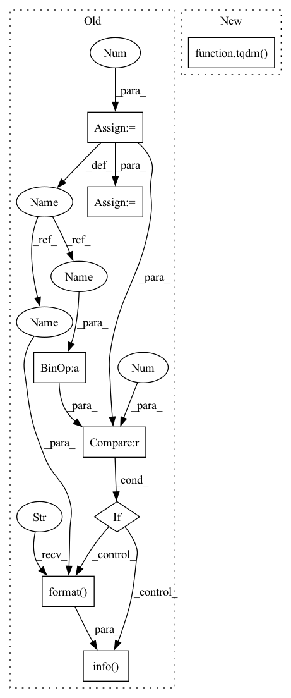

Pattern ID :6017
Before Change
// t1 = time.time()
all_results = []
searched = 0
for query in tokenized_queries:
searched += 1
if searched % 1000 == 0 :
logging.info("{} searches finished".format(searched ) )
results = self._get_scores(query)
all_results.append(results[:topk])
// logging.info("Done searching in {}s".format(time.time() - t1))After Change
return sorted(scores.items(), key=lambda x: x[1], reverse=True)
def search(self, queries, topk=100):
results = [self._get_scores(q) for q in tqdm( queries, desc="searched") ]
results = [r[:topk] for r in results]
logging.info("Done searching")
return resultsIn pattern: SUPERPATTERN
Frequency: 3
Non-data size: 8
Instances Fragment ID: 21008891
Project Name: algoprog/quin
Commit Name: 70f2d44ceb7b2bb463defabd14457b6877053b03
Time: 2021-06-08
Author: algoprog@users.noreply.github.com
File Name: retriever/sparse_retriever.py
M Class Name: SparseRetriever
N Class Name: SparseRetriever
M Method Name: search(3)
N Method Name: search(4)
M Parent Class:
N Parent Class:
M File Name: retriever/sparse_retriever.py
N File Name: retriever/sparse_retriever.py
M Start Line: 183
M End Line: 202
N Start Line: 201
N End Line: 204
Before Change
verbose):
model.train(True)
total_loss = []
cnt = 0
loss_func = self.loss_func or model.calculate_loss
for batch in data_loader:
// one batch, one step
self.optimizer.zero_grad()
batch.to_tensor(device=self.config["device"])
loss = loss_func(batch)
loss.backward()
total_loss.append(loss.data.cpu().numpy().tolist())
try:
torch.nn.utils.clip_grad_norm_(model.parameters(), clip)
except:
pass
self.optimizer.step()
cnt += 1
if cnt % verbose == 0 :
self._logger.info("finish batch {}/{}".format( cnt, total_batch) )
avg_loss = np.mean(total_loss, dtype=np.float64)
return model, avg_loss
def _valid_epoch(self, data_loader, model, total_batch, verbose):After Change
model.train(True)
total_loss = []
loss_func = self.loss_func or model.calculate_loss
for batch in tqdm( data_loader, desc="train model") :
// one batch, one step
self.optimizer.zero_grad()
batch.to_tensor(device=self.config["device"]) Fragment ID: 21008892
Project Name: libcity/bigscity-libcity
Commit Name: ec61c9cd984d1c86ee715380ed3b65b4222c8d1f
Time: 2021-05-06
Author: 33283819+WenMellors@users.noreply.github.com
File Name: trafficdl/executor/traj_loc_pred_executor.py
M Class Name: TrajLocPredExecutor
N Class Name: TrajLocPredExecutor
M Method Name: run(5)
N Method Name: run(7)
M Parent Class: AbstractExecutor
N Parent Class: AbstractExecutor
M File Name: trafficdl/executor/traj_loc_pred_executor.py
N File Name: trafficdl/executor/traj_loc_pred_executor.py
M Start Line: 110
M End Line: 131
N Start Line: 112
N End Line: 112
Before Change
def _valid_epoch(self, data_loader, model, total_batch, verbose):
model.train(False)
self.evaluator.clear()
cnt = 0
total_loss = []
loss_func = self.loss_func or model.calculate_loss
for batch in data_loader:
batch.to_tensor(device=self.config["device"])
scores = model.predict(batch)
loss = loss_func(batch)
total_loss.append(loss.data.cpu().numpy().tolist())
evaluate_input = {
"uid": batch["uid"].tolist(),
"loc_true": batch["target"].tolist(),
"loc_pred": scores.tolist()
}
cnt += 1
if cnt % verbose == 0 :
self._logger.info("finish batch {}/{}".format( cnt, total_batch) )
self.evaluator.collect(evaluate_input)
avg_acc = self.evaluator.evaluate()[self.metrics] // 随便选一个就行
avg_loss = np.mean(total_loss, dtype=np.float64)
return avg_acc, avg_lossAfter Change
self.evaluator.clear()
total_loss = []
loss_func = self.loss_func or model.calculate_loss
for batch in tqdm( data_loader, desc="validate model") :
batch.to_tensor(device=self.config["device"])
scores = model.predict(batch)
loss = loss_func(batch) Fragment ID: 21008893
Project Name: libcity/bigscity-libcity
Commit Name: ec61c9cd984d1c86ee715380ed3b65b4222c8d1f
Time: 2021-05-06
Author: 33283819+WenMellors@users.noreply.github.com
File Name: trafficdl/executor/traj_loc_pred_executor.py
M Class Name: TrajLocPredExecutor
N Class Name: TrajLocPredExecutor
M Method Name: _valid_epoch(3)
N Method Name: _valid_epoch(5)
M Parent Class: AbstractExecutor
N Parent Class: AbstractExecutor
M File Name: trafficdl/executor/traj_loc_pred_executor.py
N File Name: trafficdl/executor/traj_loc_pred_executor.py
M Start Line: 134
M End Line: 153
N Start Line: 132
N End Line: 152